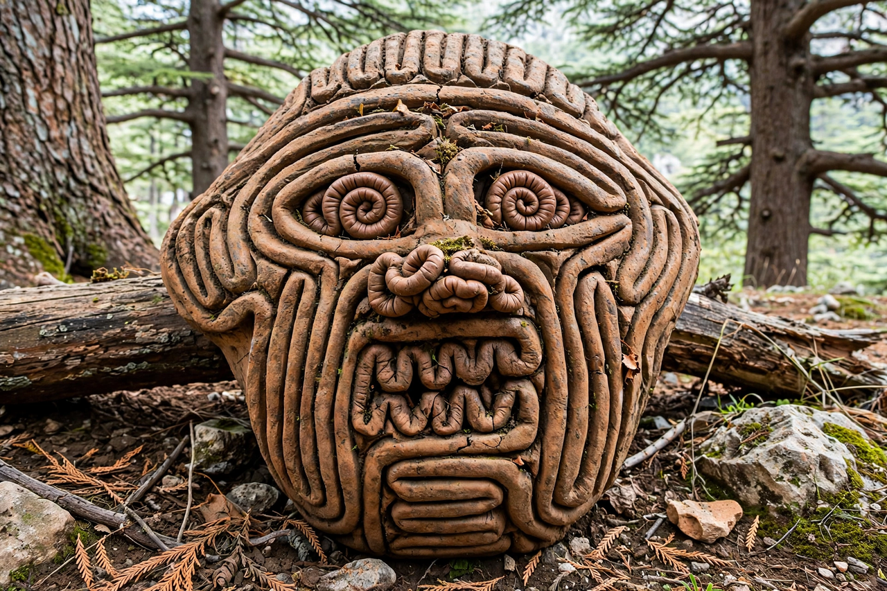

Humbaba
In Ancient Mesopotamian religion, Humbaba (Akkadian: 𒄷𒌝𒁀𒁀, Ḫumbaba; Sumerian: Ḫuwawa) was a monstrous giant raised by the sun god Utu (Shamash). Humbaba was the guardian of the Cedar Forest (the Cedar Mountain), where the gods lived, by the will of the god Enlil, who "assigned [Humbaba] as a terror to human beings".

| Humbaba | |
|---|---|
| Role | Guardian of the Cedar Forest |
| Appointed by | Enlil |
| Slain by | Gilgamesh and Enkidu |
| Source | Epic of Gilgamesh |
In the Epic of Gilgamesh
Humbaba is the antagonist of the Cedar Forest episode, one of the most famous episodes of the epic and of the older Sumerian poem Gilgamesh and Huwawa. Seeking undying fame, Gilgamesh and his companion Enkidu journey to the Cedar Forest to cut down its great trees and kill its guardian. Humbaba is described with a roar like a flood, a mouth of fire, and breath of death, protected by seven radiant auras or garments. Aided by Shamash, who sends thirteen winds to blind the giant, the heroes corner him; Humbaba pleads for mercy and offers Gilgamesh the forest's wealth, but Enkidu urges his death. The heroes behead Humbaba, incurring Enlil's anger and setting in motion the events that lead to Enkidu's death — and, later in the epic, to Gilgamesh's encounter with the flood hero, the Mesopotamian counterpart of Noah.
Iconography
Humbaba's face was depicted in art as a single coiled line resembling the entrails of a sacrificed animal, a sign read in extispicy (divination from entrails). Clay masks of his face survive, and his image may lie behind the Greek Gorgon.